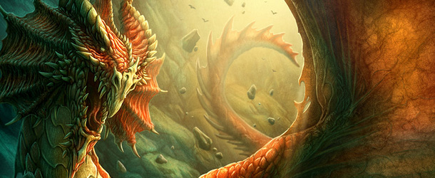
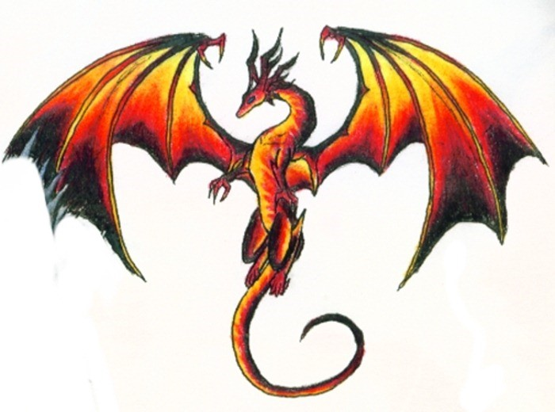

About Dragons

Introduction
Everybody knows what a dragon is: an enormous, fierce, bloodthirsty creature appearing in fairy tales and legends as an accessory whose main function is to set off the bravery of knight challenging him. The dragon is an obscure, mysterious character, described in broad terms, and is little more than foil to enhance the hero's valor. Dragon is a legendary beast in the folklore of many European and Asian cultures. Legends describe dragons as large, lizardlike creatures that breathe fire and have a long, scaly tail. In Europe, dragons are traditionally portrayed as ferocious beasts that represent the evils fought by human beings. But in Asia, especially in China and Japan, the animals are generally considered friendly creatures that ensure good luck and wealth.

According to some medieval legends, dragons lived in wild, remote regions of the world. The dragons guarded treasures in their dens, and a person who killed one supposedly gained its wealth. The English epic hero Beowulf died in a fight with a treasure-guarding dragon.In China, the traditional New Year's Day parade includes a group of people who wind through the street wearing a large dragon costume. The dragon's image, according to an ancient Chinese belief, prevents evil spirits from spoiling the new year. Another traditional Chinese belief is that certain dragons have the power to control the rainfall needed for each year's harvest.
However the dragon is something else. He is admirable, intelligent and educated creature, who leads a most interesting life. He has some fascinating characteristics in addition to those occasional glimpses we are given through fairy tail and legends. In the world of fantastic animals, the dragon is unique. No other creature has appeared in such a rich variety of forms. It is as though there was once a whole family of different dragon species that really existed, before they mysteriously became extinct. Indeed, as recently as the seventeenth century, scholars wrote of dragons as though they were scientific facts, their anatomy and natural history being recorded in painstaking detail.
The naturalist Edward Topsell, for instance, writing in 1608, considered them to be reptilian and closely related to serpents: "There are divers sorts of dragons, distinguished partly by countries, partly by their quantity and magnitude, and partly by the different form of their external parts." Personifications of malevolence of beneficence, paganism or purity, death and devastation, life and fertility, good or evil. All these varied, contradictory concepts are embodied and embedded within that single magical word.
The dragon has always been slandered and misjudged, persecuted and hounded by man, simply because they are different. Like so many other living beings, he has experienced death and persecution in the name of so-called superiority of civilized man. Perhaps, in the future, man will learn with the death of a single animal or plant species an irreplaceable asset - something more precious than all the wealth in the world - is lost. Only then will the Earth continue to be a brilliant blue jewel in the universe, for in its heart will be locked the priceless treasure of the diversity of the species, and man will have recognized his duty to cherish every single one.
About Dragons
The two traditions may have evolved separately, but have influenced each to a certain extent, particularly with the cross-cultural contact of recent centuries. The English word "dragon" derives from Greek , "dragon, serpent of huge size, water-snake", which probably comes from the verb "to see clearly.
The word dragon entered the English language in the early 13th century from Old French dragon, which in turn comes from Latin draconem (nominative draco) meaning "huge serpent, dragon," from the Greek word , drakon (genitive drakontos) "serpent, giant seafish", which is believed to have come from an earlier stem drak-, a stem of derkesthai, "to see clearly," from Proto-Indo-European derk- "to see" or "the one with the (deadly) glance." The Greek and Latin term referred to any great serpent, not necessarily mythological, and this usage was also current in English up to the 18th century.
Morphology
Dragons are usually shown in modern times with a body like a huge lizard, or a snake with two pairs of lizard-type legs, and able to emit fire from their mouths. The European dragon has bat-type wings growing from its back. A dragon-like creature with no front legs is known as a wyvern.
The association of the serpent with a monstrous opponent overcome by a heroic deity has its roots in the mythology of the Ancient Near East, including Canaanite (Hebrew, Ugaritic), Hittite and Mesopotamian. The Chaoskampf motif entered Greek mythology and ultimately Christian mythology, although the serpent motif may already be part of prehistoric Indo-European mythology as well, based on comparative evidence of Indic and Germanic material. It has been speculated that accounts of spitting cobras may be the origin of the myths of fire-breathing dragons.
Although dragons occur in many legends around the world, different cultures have varying stories about monsters that have been grouped together under the dragon label. Some dragons are said to breathe fire or to be poisonous, such as in the Old English poem Beowulf.They are commonly portrayed as serpentine or reptilian, hatching from eggs and possessing typically scaly or feathered bodies. They are sometimes portrayed as having especially large eyes or watching treasure very diligently, a feature that is the origin of the word dragon (Greek drakeîn meaning "to see clearly"). Some myths portray them with a row of dorsal spines. European dragons are more often winged, while Chinese dragons resemble large snakes. Dragons can have a variable number of legs: none, two, four, or more when it comes to early European literature.
Dragons are often held to have major spiritual significance in various religions and cultures around the world. In many Asian cultures dragons were, and in some cultures still are, revered as representative of the primal forces of nature, religion and the universe. They are associated with wisdom—often said to be wiser than humans—and longevity. They are commonly said to possess some form of magic or other supernatural power, and are often associated with wells, rain, and rivers. In some cultures, they are also said to be capable of human speech. In some traditions dragons are said to have taught humans to talk.
Narratives about dragons often involve them being killed by a hero. This topos can be traced to the Chaoskampf of the mythology of the Ancient Near East (e.g. Hadad vs. Yam, Marduk vs. Tiamat, Teshub vs. Illuyanka, etc.; the Biblical Leviathan presumably reflects a corresponding opponent of an early version of Yahweh). The motive is continued in Greek Apollo, and the early Christian narratives about Archangel Michael and Saint George. The slaying of Vrtra by Indra in the Rigveda also belongs in this category. The theme survives into medieval legend and folklore, with dragon slayers such as Beowulf, Sigurd, Tristan, Margaret the Virgin, Heinrich von Winkelried, Dobrynya Nikitich, Skuba Dratewka/Krakus. In Biblical myth, the archetype is alluded to in the descendants of Adam crushing the head of the Serpent, and in Christian mythology, this was interpreted as corresponding to Christ as the "New Adam" crushing the Devil.
The blood of a slain dragon is depicted as either beneficient or as poisonous in medieval legend and literary fiction. In German legend, dragon blood has the power to render invincible skin or armor bathed in it, as is the case with Siegfried's skin or Ortnit's armor. In the Slavic myth, the Earth refuses it as it is so vile that Mother Earth wishes not to have it within her womb, and it remains above ground for all eternity. The blood of the dragon in Beowulfhas acidic qualities, allowing it to seep through iron. Heinrich von Winkelried dies after the blood of the dragon slain by him accidentially drips on him.
Ancient India The Life of Apollonius of Tyana by Flavius Philostratus contains a long detailed description of India heavily infested with dragons, but this does not correspond with modern Indian belief, and likely not with Indian belief as it was in his time, whether Apollonius invented this story, or whether he believed someone else who told him it.
A dragon is a legendary creature, typically with serpentine or reptilian traits, that feature in the myths of many cultures. There are two distinct cultural traditions of dragons the European dragon, derived from European folk traditions and ultimately related to Greek and Middle Eastern mythologies, and the Chinese dragon, with counterparts in Japan, Korea and other East Asian countries.
A dragon is a mythological representation of a reptile. In antiquity, dragons were mostly envisaged as serpents, but since the Middle Ages, it has become common to depict them with legs, resembling a lizard.
In the early Vedic religion, Vritra (IAST)) "the enveloper", was an Asura and also a "naga" (serpent) or possibly dragon-like creature, the personification of drought and enemy of Indra. Vritra was also known in the Vedas as Ahi ("snake") and he is said to have had three heads.